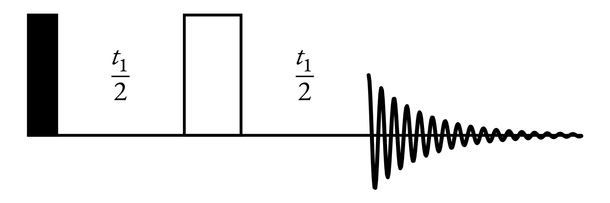

nmr_sims.experiments.jres¶
Module for simulating homonuclear J-Resolved (2DJ) experiments.
Pulse Sequence:
- class nmr_sims.experiments.jres.JresSimulation(spin_system, points, sweep_widths, offset=0.0, channel='1H')[source]¶
Simulation class for J-Resolved (2DJ) experiment.
Initialise a simulaion object.
- Parameters
spin_system (
SpinSystem) – The spin system to perform the simulation on.points (
Tuple[int,int]) – The number of points sampled.sweep_widths (
Tuple[Union[str,float,int],Union[str,float,int]]) – The sweep width in each dimension.offset (
Union[str,float,int]) – The transmitter offset.channel (
Union[str,Nucleus]) – The nucelus targeted by the channel.
- fid(lb=None)[source]¶
Return the FID associated with a simulation.
- Parameters
lb (
Optional[Tuple[float,float]]) – Line-broadening factor for exponential window function. Default option (None), will apply an exponential window such that the final point in each dimension will be shrunk to 1/1000 of its original value.- Return type
Tuple[Tuple[ndarray,ndarray],ndarray,Tuple[str,str]]- Returns
timepoints – The timepoints sampled.
fid – The FID sampled.
labels – Axis labels for plotting purposes.
- simulate()¶
Simulate the NMR experiment.
- Return type
None
- spectrum(zf_factor=[1.0, 1.0], lb=None)[source]¶
Return the spectrum associated with a simulation.
- Parameters
zf_factor (
Tuple[float,float]) – The ratio between the number of points in the final spectrum, generated by zero-filling the FID, and the FID itself in each dimension.[1.0, 1.0](default) means no zero-filling is applied. Each value should be>= 1.0.lb (
Optional[Tuple[float,float]]) – Line-broadening factor for exponential window function. Default option (None), will apply an exponential window such that the final point in each dimension will be shrunk to 1/1000 of its original value.
- Return type
Tuple[Tuple[ndarray,ndarray],ndarray,Tuple[float,float]]- Returns
shifts – The chemical shifts sampled.
spectrum – The spectrum generated from the FID.
labels – Axis labels for plotting purposes.